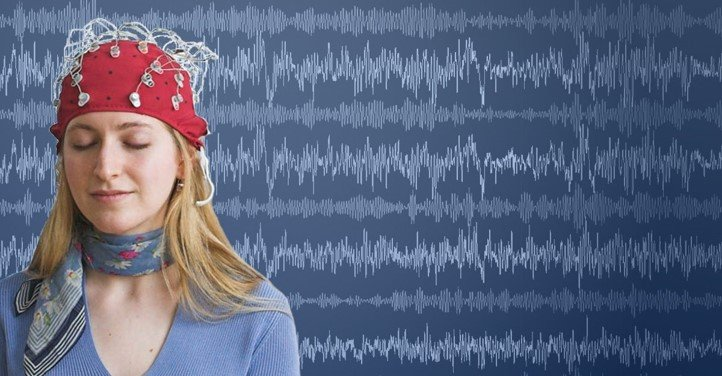
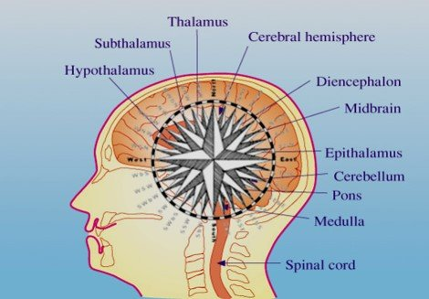

Persona en reposo, con los ojos cerrados:
El cerebro está más descansado, menos actividad cerebral cuando mira hacia el ESTE
Persona involucrada en la actividad enfocada:
El cerebro está activo y más coherente cuando mira hacia el ESTE
Un elemento clave de la arquitectura Védica es el descubrimiento de que el cerebro humano es sensible a la orientación, en particular y preferentemente al Este: la orientación del sol naciente. La ciencia ha comenzado ya a estudiar los principios del Sthapatya Veda Maharishi para medir científicamente este fenómeno.

Miles de millones de magnetitas en el cerebro lo hacen sensible a la orientación
Se descubrió un GPS en el cerebro. Premio Nobel de Medicina 2014
Cuando uno mira hacia el este, la fisiología del cerebro funciona de manera diferente que cuando uno mira hacia el norte, el sur o el oeste.